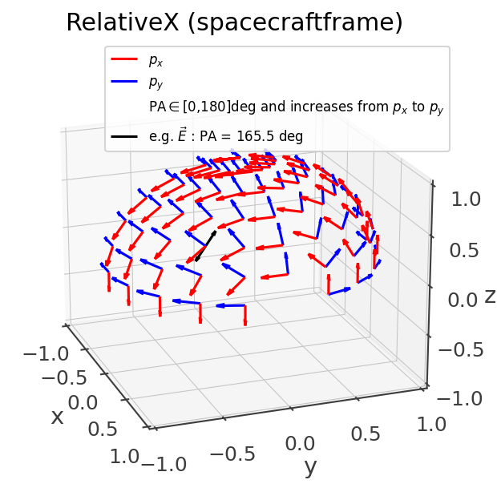
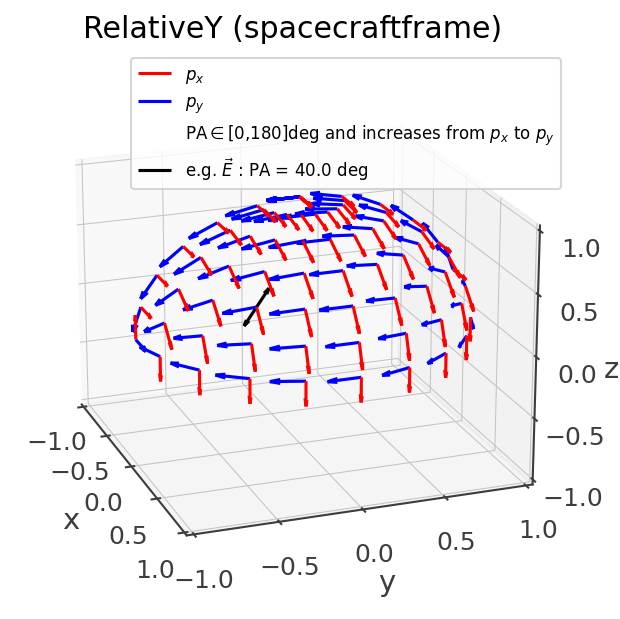
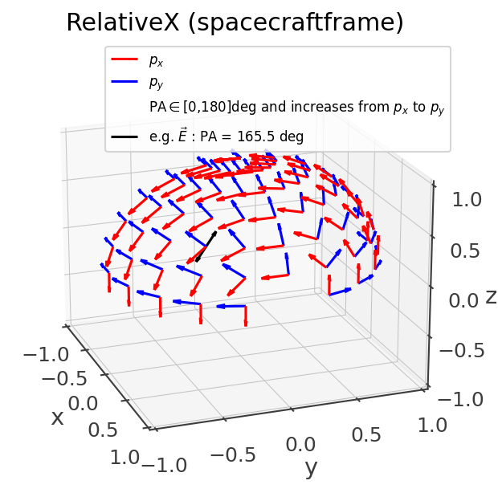
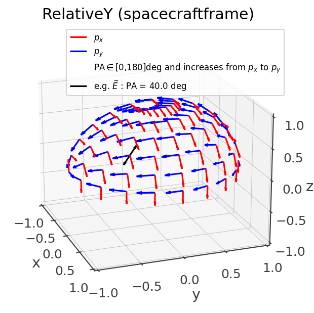

Polarization
Conventions
When specifying a polarization angle (PA) it is important to specify the direction of the source and the convention used. All of this is necessary to reconstruct the polarization vector –i.e. the direction of the electric field.
A polarization convention is defined by a set of (px,py) unit vectors (a basis) that define a plane at each location on the sphere s = [x,y,z]. The location s is always normal to the polarization plane defined by (px,py). The polarization angle increases from px to py.
Cosipy supports two major convention constructions: orthographic and stereographic. These are named after the corresponding conformal projection transformation.
In addition for the overall construction prescription, a polarization convention fully defined by the reference frame and whether the polarization angle increases clockwise or counter-clockwise when looking at the source.
Orthographic
This the regular polarization convention prescription found in the literature, where the px,py are aligned with the meridians and parallels, and one of them always points towards an arbitrary reference vector. For eample, the following figure corresponds to orthographic convention in ICRS coordinates, pointing towards the North-pole and counter-clockwise when looking at the source (only one quadrant is plotted for easier visualization):
OrthographicConvention(ref_vector = SkyCoord(ra = 0*u.deg, dec = 90*u.deg, frame = 'icrs'), clockwise = False)
{kind=link}
This matches the IAU convention and can be also called by name:
PolarizationConvention.get_convention("IAU")
Other special conventions of the orthographic family that can also be called by name are MEGAlibs RelativeX/Y/Z, where the -py vector points towards the reference vector (as opposed to px):
 



{kind=link}
{kind=link}
Stereographic
An issue of the orthographic projection is that it is not well-defined at the location of the reference vector and its antipodal direction. This can cause issues due to numerical errors when construction a detector response near those locations. The stereographic convention is meant to solve this issue by describing the polarization angle in spacecraft coordinates with only a single undefined location at -z, where the effective area is almost null. Due to the hairy ball theorem it is impossible to obtain a convention where the polarization basis vector have a smooth transition and with undefined locations.
Near the z-axis, it is very similar to using an orthographic convention with +x as the reference vector, and it deviates near and below the equator:

Converting from one convention and/or frame to another
Use the transform_to function:
pa_inertial = PolarizationAngle(20*u.deg, source_direction, convention = 'IAU')
pa2_sc = pa.transform_to('RelativeX', attitude = Attitude.from_rotvec([0,10,0]*u.deg))
print(pa2_sc.angle.degree)
Results in 161.95. Note that in addition to accounting for the difference polarization reference vector, it also transforms from one reference frame to another on the fly.
Classes
- class cosipy.polarization.PolarizationASAD(source_vector, source_spectrum, response_file, sc_orientation, fit_convention=None)[source]
Azimuthal scattering angle distribution (ASAD) method to fit polarization.
- Parameters:
source_vector (astropy.coordinates.sky_coordinate.SkyCoord) – Source direction
source_spectrum (astromodels.functions.functions_1D) – Spectrum of source
response_file (str or pathlib.Path) – Path to detector response
sc_orientation (cosipy.spacecraftfile.SpacecraftFile.SpacecraftFile) – Spacecraft orientation
fit_convention (cosipy.polarization.conventions.PolarizationConvention, optional) – Polarization reference convention to use for fit. Default is RelativeX
- convolve_spectrum(spectrum, response_file, sc_orientation)[source]
Convolve source spectrum with response and calculate azimuthal scattering angle bins.
- Parameters:
response_file (str or pathlib.Path) – Path to detector response
sc_orientation (cosipy.spacecraftfile.SpacecraftFile.SpacecraftFile) – Spacecraft orientation
- Returns:
expectation (cosipy.response.PointSourceResponse.PointSourceResponse) – Expected counts in each bin of Compton data space
azimuthal_angle_bins (list) – Centers of azimuthal scattering angle bins calculated from PsiChi bins in response
- calculate_azimuthal_scattering_angle(psi, chi)[source]
Calculate the azimuthal scattering angle of a scattered photon.
- Parameters:
- Returns:
azimuthal_angle – Azimuthal scattering angle defined with respect to given reference vector
- Return type:
- calculate_azimuthal_scattering_angles(unbinned_data)[source]
Calculate the azimuthal scattering angles for all events in a dataset.
- create_asad(azimuthal_angles, bins=20)[source]
Create ASAD and calculate uncertainties.
- Parameters:
- Returns:
asad – Counts and Gaussian/Poisson errors in each azimuthal scattering angle bin
- Return type:
- create_polarized_asads(bins=None)[source]
Calculate the azimuthal scattering angles for all bins.
- Parameters:
bins (int or np.array, optional) – Number of azimuthal scattering angle bins if int or edges of azimuthal scattering angle bins if np.array (radians)
- Returns:
asads – Counts and Gaussian/Poisson errors in each azimuthal scattering angle bin for each polarization angle bin
- Return type:
- fit_asad(counts, p0, bounds, sigma)[source]
Fit the ASAD with a sinusoid.
- Parameters:
- Returns:
popt (np.ndarray) – Fitted parameter values
uncertainties (list) – Uncertainty on each parameter value
- correct_asad(data_asad, unpolarized_asad)[source]
Correct the ASAD using the ASAD of an unpolarized source.
- Parameters:
- Returns:
asad – Normalized counts and uncertainties in each azimuthal scattering angle bin
- Return type:
- calculate_mu(counts_corrected, p0=None, bounds=None, sigma=None)[source]
Calculate the modulation (mu).
- Parameters:
counts_corrected (list) – Counts in each azimuthal scattering angle bin
p0 (list or np.array) – Initial guess for parameter values
bounds (2-tuple of float, list, or np.array) – Lower & upper bounds on parameters
sigma (float, list, or np.array) – Uncertainties for each azimuthal scattering angle bin
- Returns:
modulation – Modulation and uncertainty of fitted sinusoid
- Return type:
- calculate_mu100(polarized_asads, unpolarized_asad)[source]
Calculate the modulation (mu) of an 100% polarized source.
- Parameters:
- Returns:
mu_100 – Modulation of 100% polarized source and uncertainty of constant function fit to modulation in all polarization angle bins
- Return type:
- fit(mu_100, counts_corrected, p0=None, bounds=None, sigma=None)[source]
Fit the polarization fraction and angle.
- Parameters:
mu_100 (dict) – Modulation and uncertainty of a 100% polarized source
counts_corrected (list) – Counts in each azimuthal scattering angle bin
p0 (list or np.array) – Initial guess for parameter values
bounds (2-tuple of float, list, or np.array) – Lower & upper bounds on parameters
sigma (float, list, or np.array) – Uncertainties for each azimuthal scattering angle bin
- Returns:
polarization – Polarization fraction, polarization angle, and best fit parameter values for fitted sinusoid, and associated uncertainties
- Return type:
- cosipy.polarization.calculate_uncertainties(counts)[source]
Calculate the Poisson/Gaussian uncertainties for a list of binned counts.
- Parameters:
counts (list) – List of counts in each bin
- Returns:
uncertainties – Lower & upper uncertainties for each bin
- Return type:
np.ndarray
- class cosipy.polarization.PolarizationConvention[source]
-
- property frame
Astropy coordinate frame
- get_basis(source_direction: astropy.coordinates.SkyCoord)[source]
Get the px,py unit vectors that define the polarization plane on this convention. Polarization angle increments from px to py.
- Parameters:
source_direction (SkyCoord) – The direction of the source
- Returns:
px,py – Polarization angle increaes from px to py. pz is always the opposite of the source direction –i.e. in the direction of the particle.
- Return type:
SkyCoord
- class cosipy.polarization.OrthographicConvention(ref_vector: astropy.coordinates.SkyCoord = None, clockwise: bool = False)[source]
- property is_clockwise
When looking at the source
- property frame
Astropy coordinate frame
- get_basis(source_direction: astropy.coordinates.SkyCoord)[source]
Get the px,py unit vectors that define the polarization plane on this convention. Polarization angle increments from px to py.
- Parameters:
source_direction (SkyCoord) – The direction of the source
- Returns:
px,py – Polarization angle increaes from px to py. pz is always the opposite of the source direction –i.e. in the direction of the particle.
- Return type:
SkyCoord
- class cosipy.polarization.StereographicConvention(clockwise: bool = False, attitude: scoords.Attitude = None)[source]
- property frame
Astropy coordinate frame
- get_basis(source_direction: astropy.coordinates.SkyCoord)[source]
Get the px,py unit vectors that define the polarization plane on this convention. Polarization angle increments from px to py.
- Parameters:
source_direction (SkyCoord) – The direction of the source
- Returns:
px,py – Polarization angle increaes from px to py. pz is always the opposite of the source direction –i.e. in the direction of the particle.
- Return type:
SkyCoord